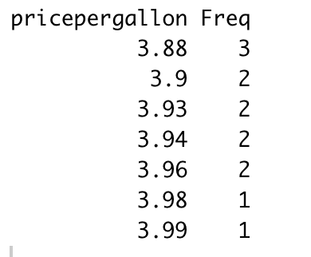
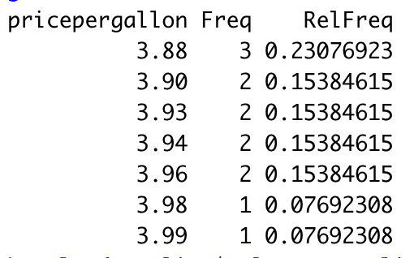
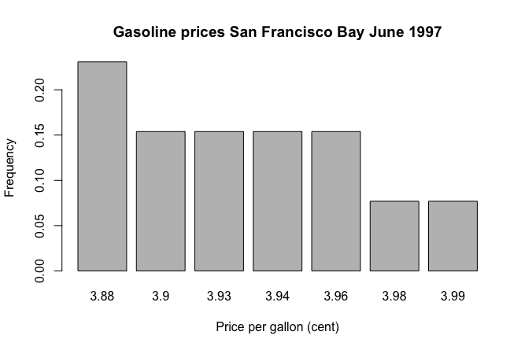
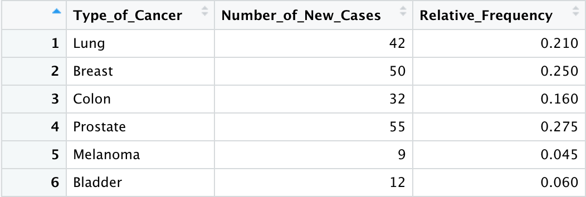
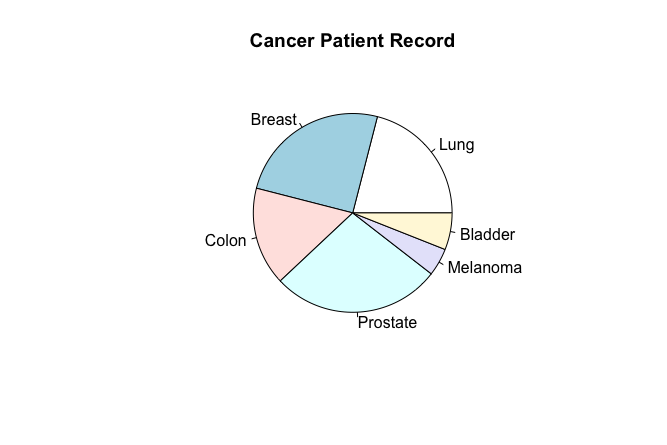

Descriptive Statistics : Tables and Graphs
The best way to make friends with the data is to get creative and colourful. But how do we get creative and colourful with data? By means of descriptive statistics. But what is descriptive statistics?
Descriptive statistics is the practice of understanding and presenting numerical findings clearly and concisely. To easily show the essential characteristics of the data to the observer.
Frequency Tables and Graphs
The simplest way to understand data is to tabulate it. The following is a sample of prices, rounded to the nearest cent, charged per gallon of standard unleaded gasoline in the San Francisco Bay Area in June 1997.
3.88, 3.90, 3.93, 3.90, 3.93, 3.96, 3.88, 3.94, 3.96, 3.88, 3.94, 3.99, 3.98
Now, Let’s try tabulating this to see how it will help us understand us the data better. Using R programming to work with the data.
#saving the prices in an array
pricepergallon <- c(3.88,3.90, 3.93, 3.90, 3.93, 3.96, 3.88, 3.94, 3.96, 3.88, 3.94, 3.99, 3.98)
#converting the array into a table and calulating the frequencies
x <- table(pricepergallon)
#Converting table into dataframe for better presentation
gasoline <- as.data.frame(x)
Using this we can tabulate the data to produce the table as below.
It gets easier to comprehend the data when tabulated. When the size of the data is small its very easy to understand it and make inferences from the table. Or we can use a graph to the same effect. Let us try it with a Line Graph.
Now that we have given Line graph a try let us see if bar graph will help us show this better.
The last one we will try now is a frequency polygon.
As we can see in the above graph we can communicate a lot of information visually. At one glance the viewer can infer information like the most common gas price, the highest and lowest price for the month of June, the range of the prices for June etc. But we can see that these information can be easily obtained when the data is presented in a tabular form or as a graph.
Relative Frequency Tables and Graphs
The relative frequency of a data value is the proportion of the data that have that value.
If a dataset has a total of n values, say f is the frequency of a particular value, then the ratio f/n is its relative frequency.
The relative frequencies can also be represented by using Tables and Graphs.
Lets try to calculate the relative frequency of the above example and tabulate it.
#Calculating the realtive frequencies and adding the column with relative frequency values
n <- as.numeric(sum(gasoline$Freq))
gasoline$RelFreq <- gasoline$Freq/n
Results into a table like this.
We can plot a bar plot to check how the relative frequency graph turns out.
The relative frequencies can be depicted using Pie charts. Let us see this using another example.
This table depicts the data for 200 patients admitted recently to a cancer speciality clinic.

Pie charts are a very bad way of displaying information. The eye is good at judging linear measures and bad at judging relative areas. A bar chart or dot chart is a preferable way of displaying this type of data.
But why and what do these frequencies help us understand about the dataset?
I had the same question, so I did what I like to do these days. Ask ChatGPT. I simply used the naive prompting method to get a satisfactory answer. If you aren’t satisfied with that output you can try prompting in different ways till you are satisfied. Sharing my answers here.
The absolute frequency of a dataset refers to the number of times a particular value or category appears in the dataset. It provides basic information about the distribution of data and can be used to draw several inferences and insights. Here are some inferences that can be drawn from the absolute frequency of a dataset:
- Data Distribution: Absolute frequencies help you understand the distribution of data by showing how many times each value or category occurs. This can reveal patterns, clusters, or outliers in your data.
- Mode Identification: The value or category with the highest absolute frequency is the mode of the dataset. It represents the most common or frequently occurring data point.
- Central Tendency: Absolute frequencies can provide insights into the central tendency of the dataset. For example, in a dataset of test scores, a higher absolute frequency around a certain score may indicate a central tendency.
- Outlier Detection: Values with low absolute frequencies may indicate outliers or rare occurrences in the dataset. Identifying such outliers can be important in various data analysis tasks.
- Categorical Analysis: In categorical data, absolute frequencies help you understand the prevalence of different categories. This is useful for market research, survey analysis, and other fields where categories play a significant role.
- Decision-Making: In business and other practical applications, absolute frequencies can inform decision-making. For example, they can help identify the most popular products, customer preferences, or areas with high demand.
It's important to note that while absolute frequencies provide valuable insights, they should be considered in conjunction with other statistical measures and visualisation techniques to gain a comprehensive understanding of your dataset. Additionally, context and domain knowledge are crucial for interpreting the implications of absolute frequencies accurately.
You can try this to find out what relative frequency does for us. I hope you have a basic idea of where to start with your data and what tables and graphs can do for us. We will explore this further. Till then happy learning!